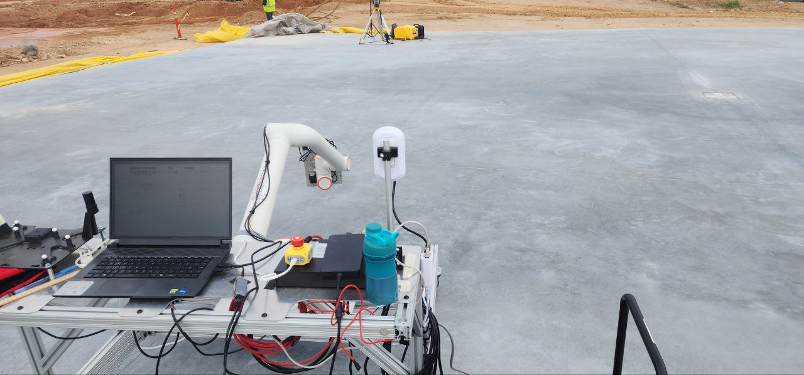
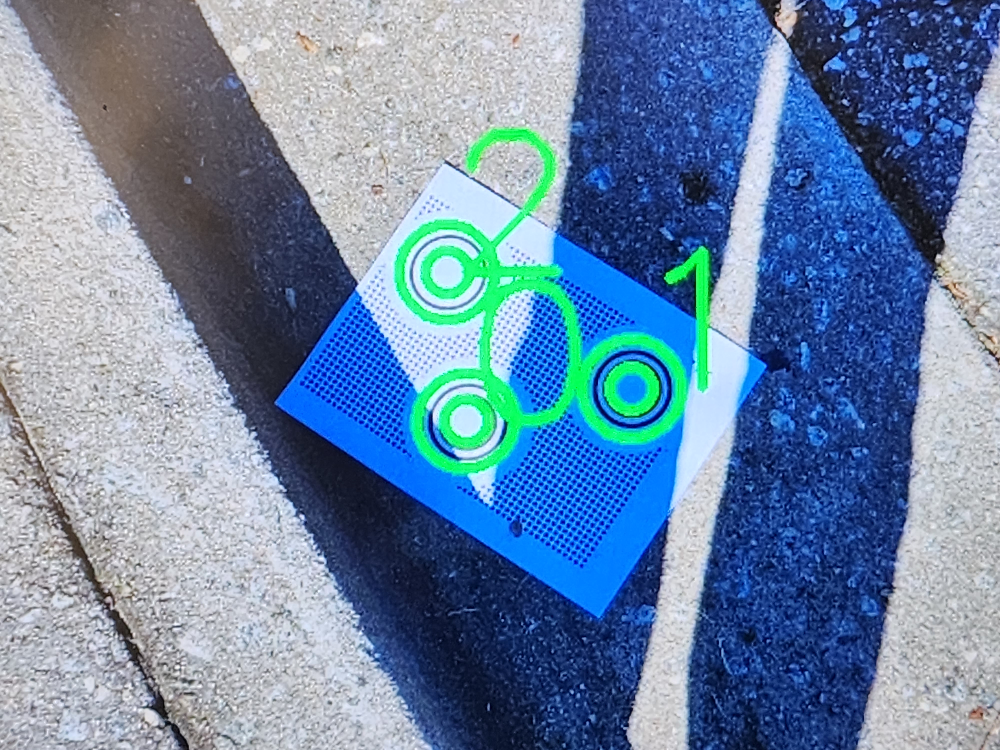
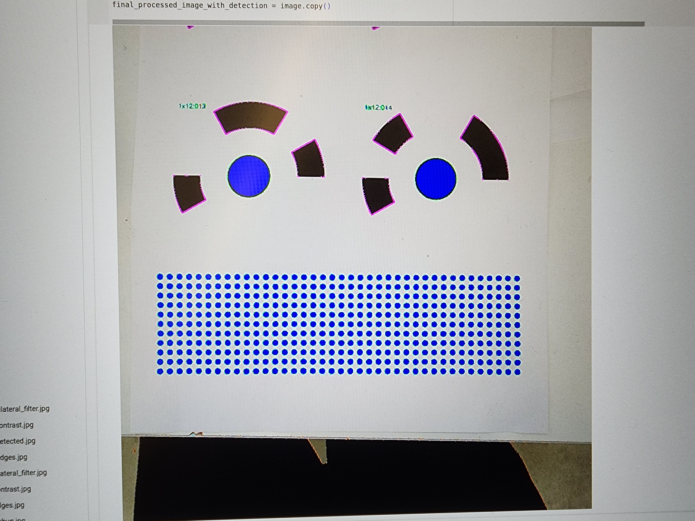
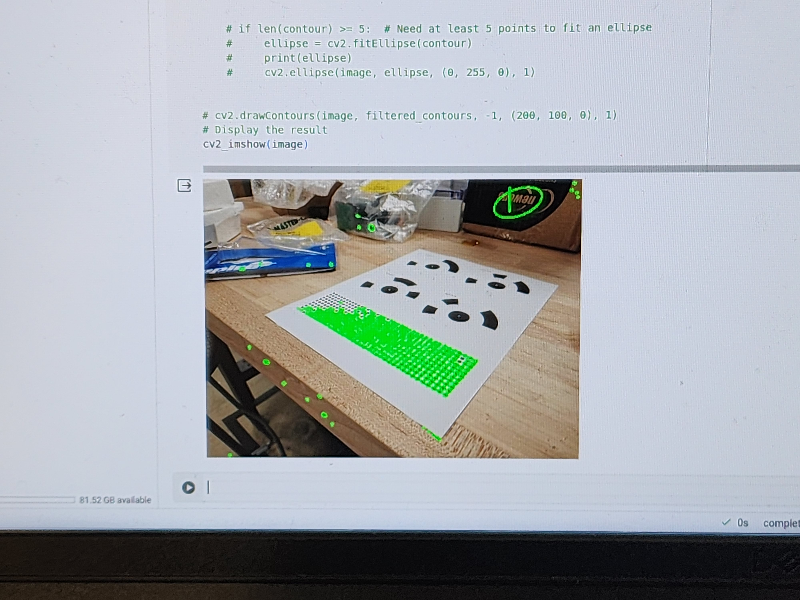
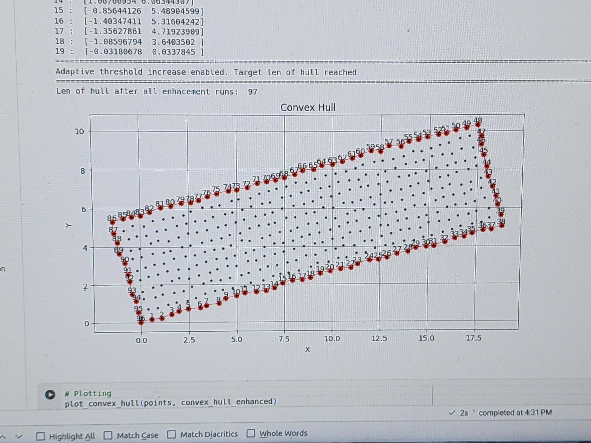
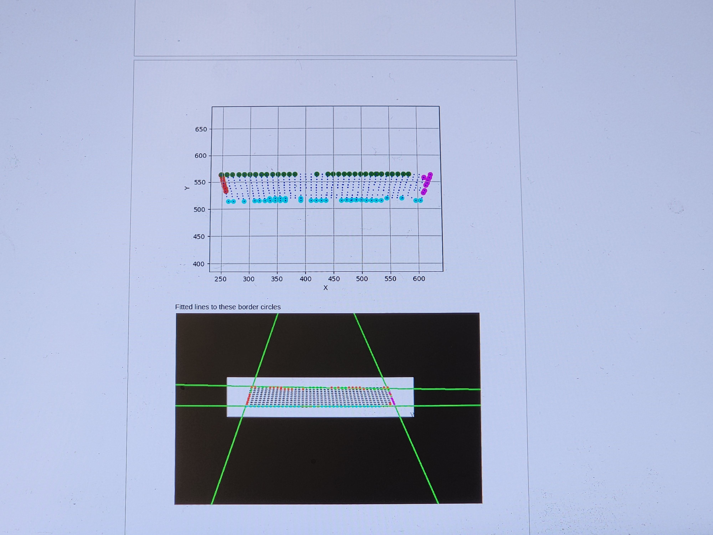
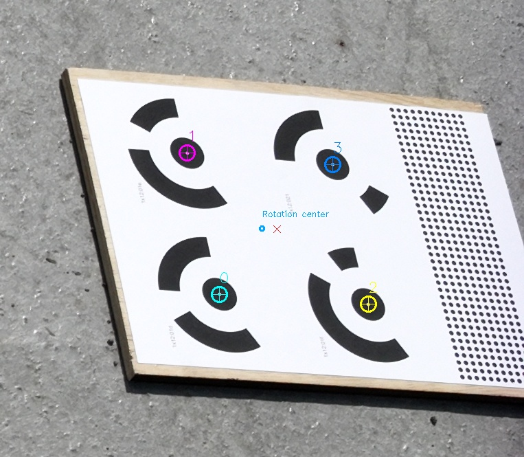
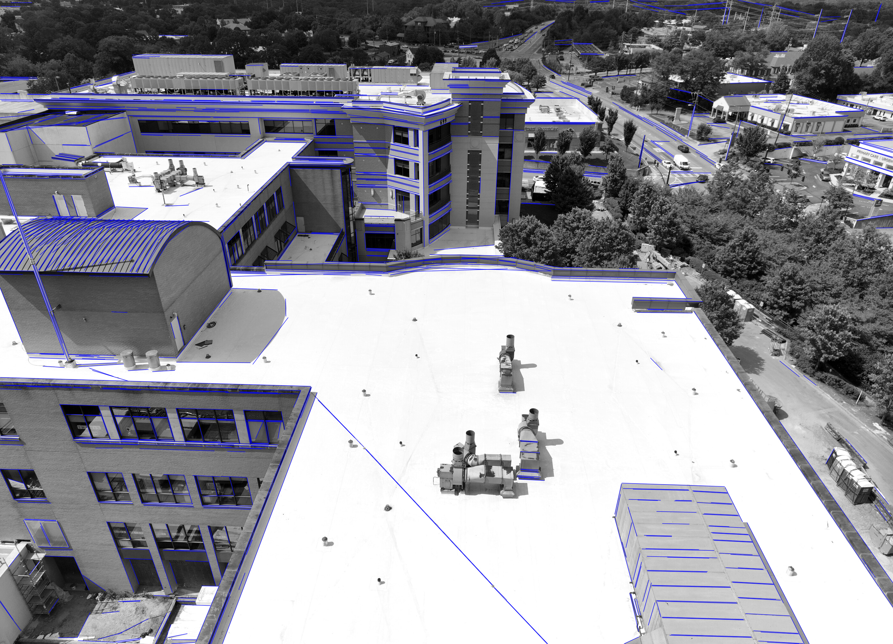
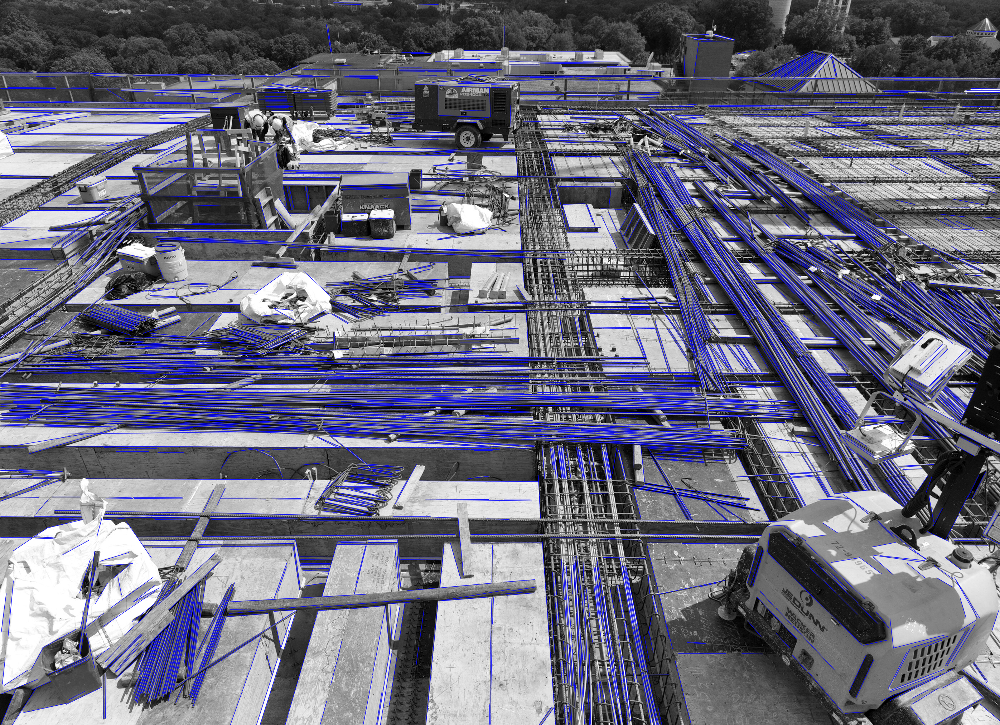

Personal project. In this project I experimented with using LLM power and image content processing. It is AI-powered furniture search engine with
Equiped with database of shops (currently only IKEA, but wait there will be more!) and furniture.
The database is filled using web-scrapper,

Another project for SkyMul. I developed a foxglove layout for mobile cart with cobot Fairino in construction worksite. I created convenient launchable desktop icon that initiates all the necessary ROS2 nodes
and bridges. The layout subscribes to robot's GPS position and draws reachable lines it can draw - high/low precision profile. It has canvases with 2D or 3D view and
building schemas and panels layout with the drop down list to select which panel to focus on.
Additionally the layout has an option of multiple layers of schematics to overlay, zoom function, 1m scale, real-time monitoring of critical ROS topics and ping response time within the network.
Apart from canvases the layout has robot's status indicator, control buttons that send commands to the robot.
Another project for SkyMul. I developed a web portal for the client managers to monitor everyday status of the construction work and a set of tools for our internal team ro process
maps, collected data, prepare drone flights and file scan reports.
Client facing portal:
- Main page is the overview of the results and tracker of daily progress with the drone scan bird view (3D reconstructed and geo-projected onto location)
- Second page is the overview of the site and panels pour plan and take off calculator.
- Third page is an individual panel viewer with schematics overlayed on the actual panel stage scane.
Stack: Static pages on github pages,

Another project I worked on at SkyMul was 3D reconstruction from motion (Structure-from-Motion). We were flying with drone over client's construction sites
capturing images. I was tasked to design fiducial markers and improve detection and quality of reconstrution. I got to explore current state of technology on circular tags detection approaches
as well as I studied the problem of linear features detection and matching during 3D reconstruction.







While working at SkyMul I got to work on other tasks for locomotion planning on quadrupedal robots. I tuned MPC controller for navigation, fused IMU estimator,
GPS, motion capture OptiTrack localization systems for robot’s different navigation modes.
I also implemented autonomous navigation with obstacle avoidance using depth camera and manipulation planning quadrupedal robot (customized Unitree Go1).
I implemented rebars detection for accurate end effector tool alignment for manipulation - you can see how accurate it is in the videos from World of Concrete demostration!
-
This project I started working on as a student at Georgia Tech at LIDAR Lab and further continued as a robotic engineer at SkyMul.
My research work at Georgia Tech focused on building robust and kinodynamically-aware footstep planner in the complex envrionment in presence of obstacles.
As part of this work I developed a tree-based algorithm to traverse feasable motions under kinodynamic constraints over the grid of rebars and
accumulating "experience" of reaching an obstacle on the way, concequently learning to avoid it.
Our manuscript was accepted for ICRA 2024
Academic project. Turtlebot3 explores the maze and navigates using LiDAR and camera to avoid collision, recognize road signs on the wall of the maze and reach the goal by following actions given by the road signs.
Academic project. In this project I studdied the effect of regularization on learned internal representations in the two-layer MLP.
Our project code is available here on git
Academic project. Networked Control in Fission–Fusion Societies of Boids
In this project, I explored networked control dynamics by implementing fission–fusion behavior within the framework of classical Reynolds’ Boids.
I introduced an anomalous agent—a member that, after a certain time, ceased updating its velocity according to the standard networked control rules.
Typically, such an agent naturally emerges as a “leader” of the system, influencing the collective motion of the entire group.
However, when this agent is a malfunctioning robot or is unable to align with the group, the group should avoid taking its reading into account.
To address this issue, I introduced an additional rule to the standard Reynolds’ conditions, enabling the detection of agents whose behavior deviates
excessively from the group average. Once identified, such anomalous agents are excluded from influencing the system’s dynamics.
Both in simulation and real-world execution, I observed that this modification preserved system stability and prevented the collective behavior of
the society from converging toward the faulty agent.
Implemented in MATLAB and executed on real robots in Robotarium at Georgia Tech.
One of my first personal projects with robots. I built a remotely controled robot on wheels with WiFi chip and USB Camera on board (to recognize its owner of cause! hehe).
As part fo the server/robot communication I wrote a chat using broadcasting protocol, so that any other robots can joint hte conversation and send commands to each other.
Raspberry Pi based autonomous robot eager to explore the outside world!
My very first project with OpenCV and face recognition. I trained it with faces of popular people from google and myself.
Pardom my potato camera quality, I was a poor student!
Funny enough my model was confusing me with Musk, it must have been telling me something....

Graphical representation of the dragon sequence.
Implemented with
Very primitive..
Just for fun..
Because this is my favourite fractal..